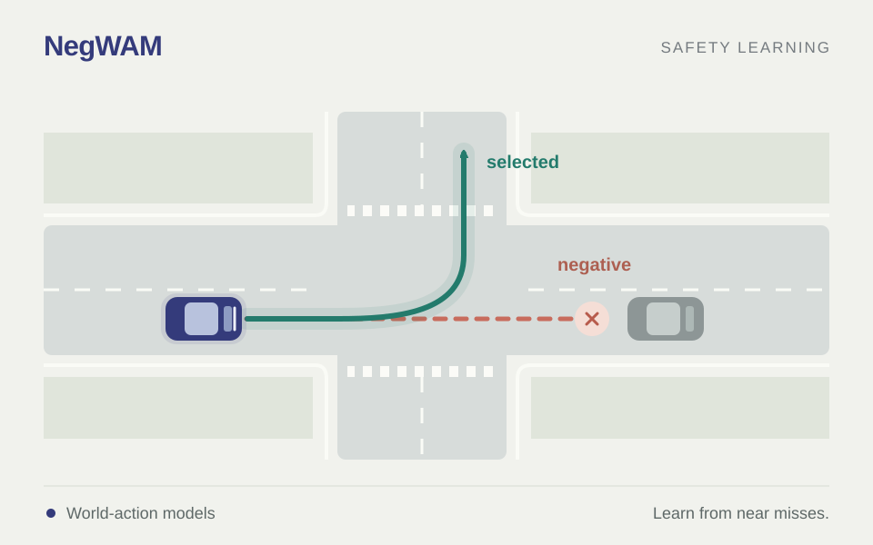
Concept illustrationAutonomous driving & embodied AI
Zihao Zhang 张子豪
Understanding the world.
Learning to act reliably.
I study world model and post-training for autonomous driving and embodied AI.
Ph.D. student at Southeast University & SLAI.
End-to-end autonomous driving Embodied AI 3D/4D world model
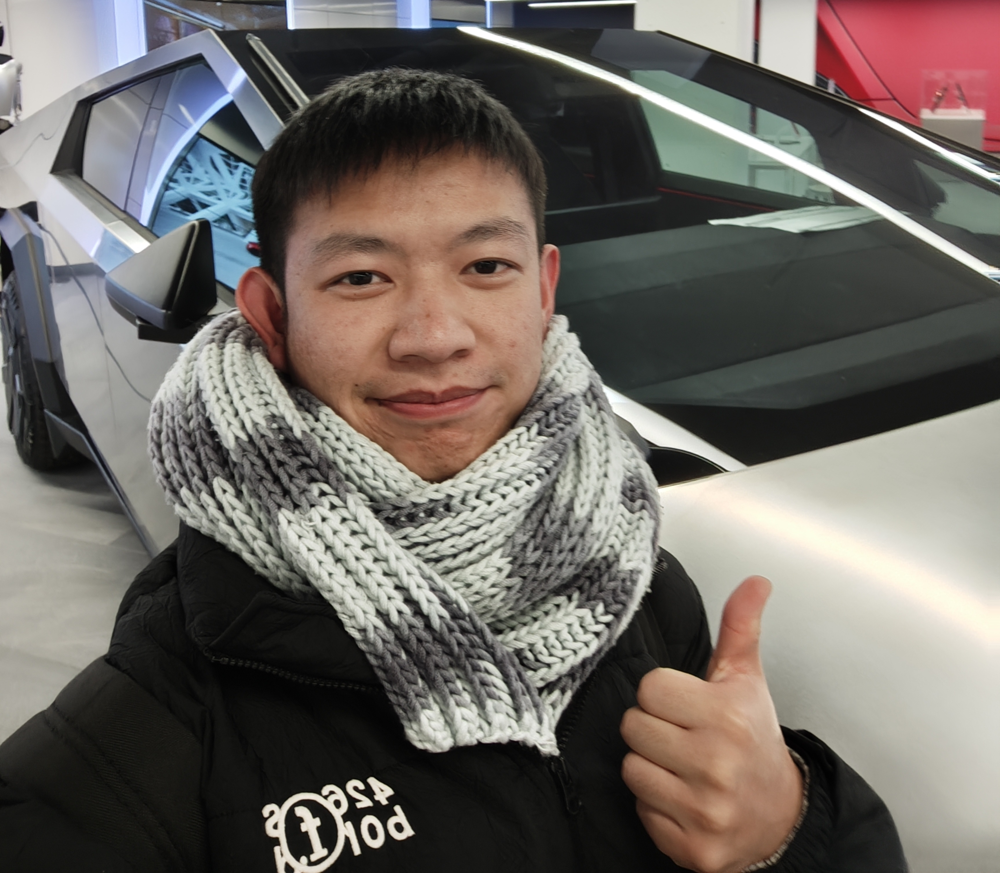
Research in focus
Selected work
Latest updates
News
Released NegWAM on arXiv — negative-aware planning for safer end-to-end driving.
Released SimVTA — simulation-grounded video-trajectory alignment for driving world-action models.
Released ViRA — a study of visual representations for end-to-end autonomous driving.
Earlier updates
Roadside Monocular 3D Detection via Cross-View Semantic Alignment was accepted to ITSC 2025.
My project on federated learning for collaborative perception received sponsorship from Jiangsu Province.
Two papers were recommended for presentation at the TRB Annual Meeting.
Research archive
Publications
Autonomous driving
World models, perception, planning, and safety.

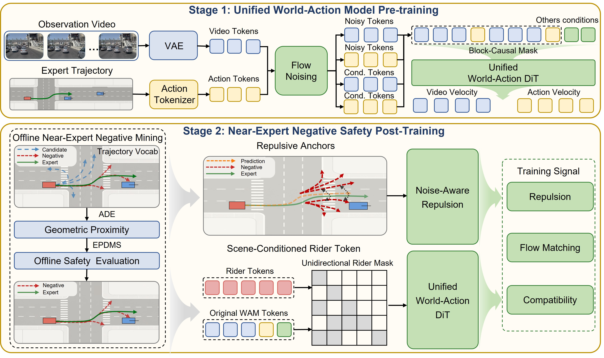

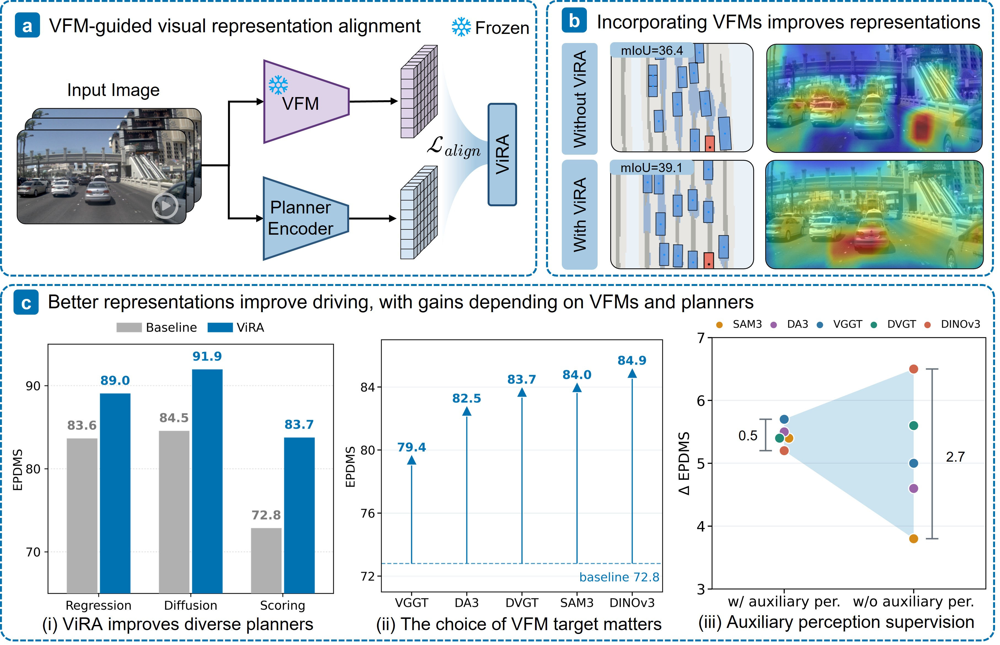

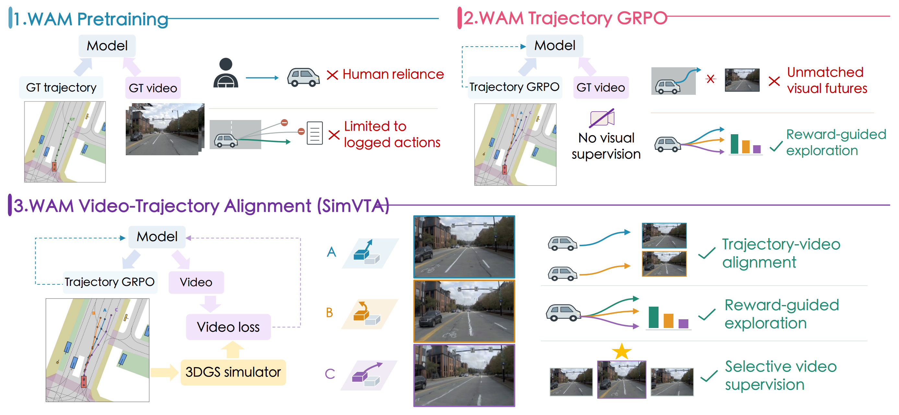

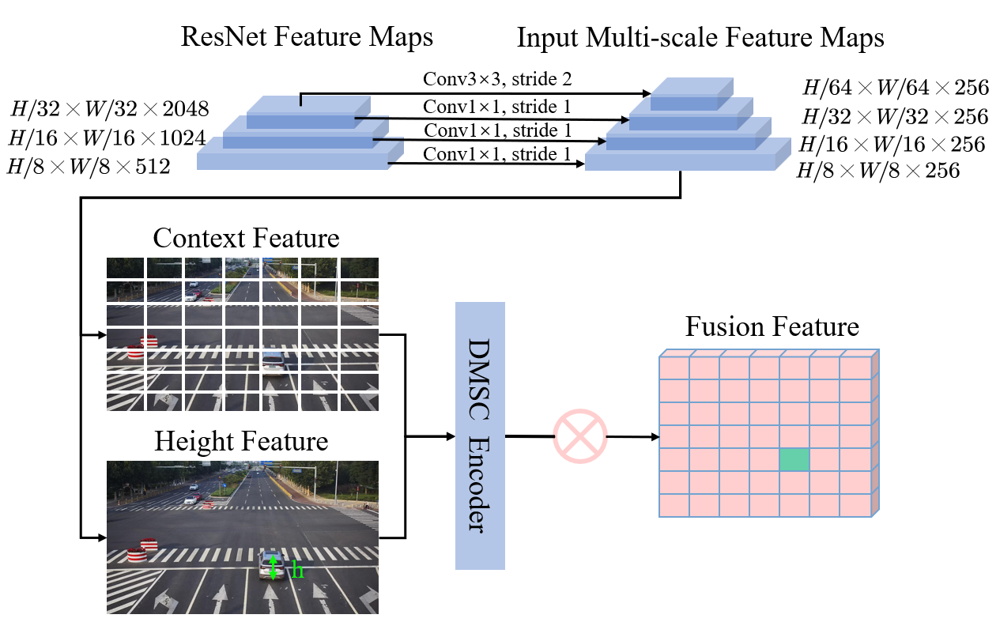
Transportation Research Board (TRB) / IEEE ITSC · 2025
Roadside Monocular 3D Detection via Cross-View Semantic Alignment

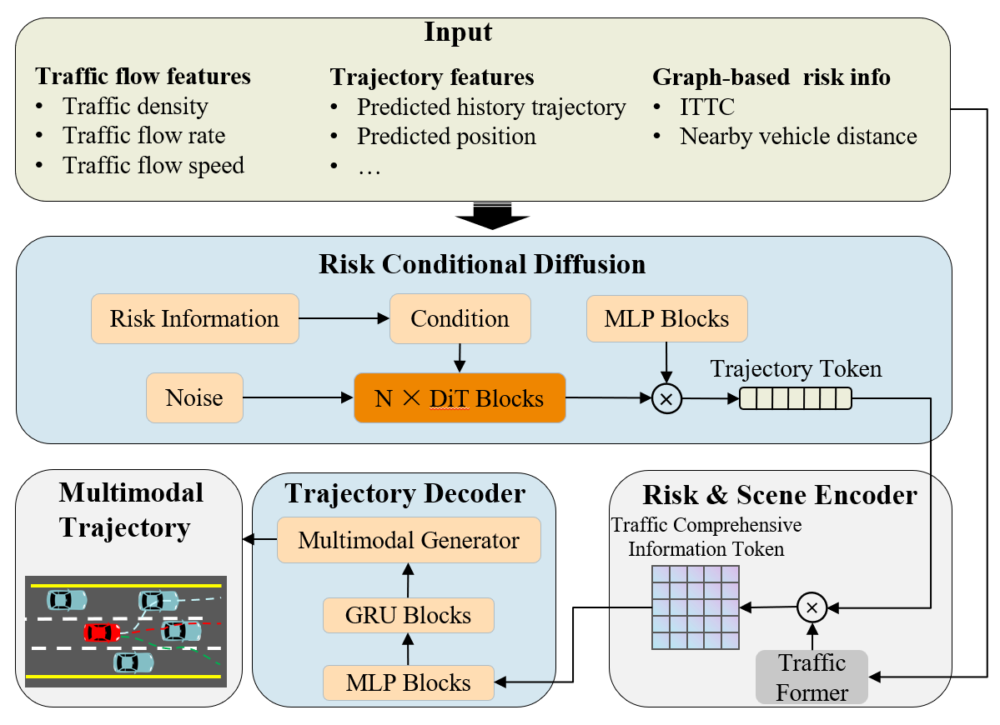
Transportation Research Board (TRB) · 2025
Risk-Informed Diffusion Transformer for Long-Tail Trajectory Prediction in the Crash Scenario
Transportation & behavior
Earlier work on mobility, human behavior, and traffic safety.

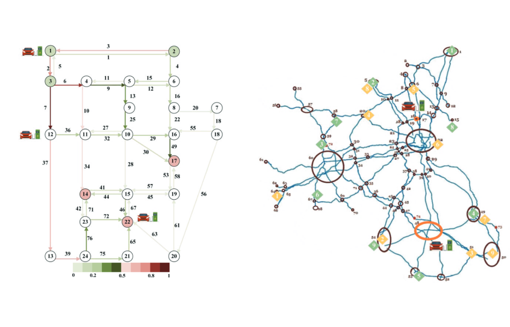
Transportation Research Part E: Logistics and Transportation Review · 2025
Optimizing charging station locations for mixed traffic of electric and gasoline vehicles: a stochastic user equilibrium approach

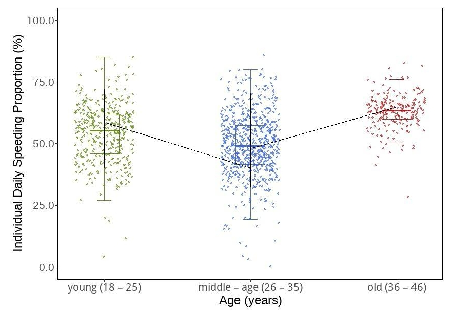
International Journal of Occupational Safety and Ergonomics · 2025
Identification of the factors influencing speeding behaviour of food delivery e-bikers in China with the naturalistic cycling data

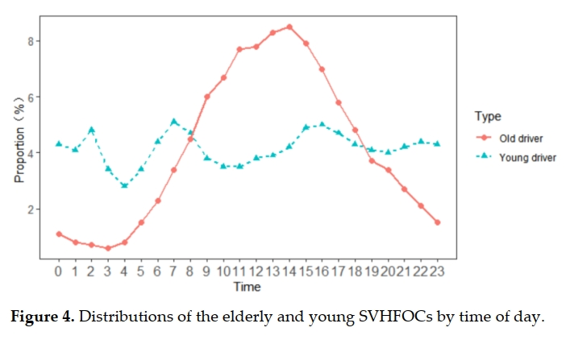

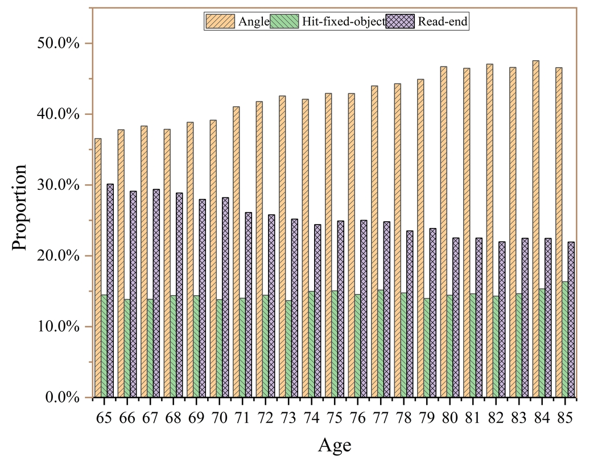


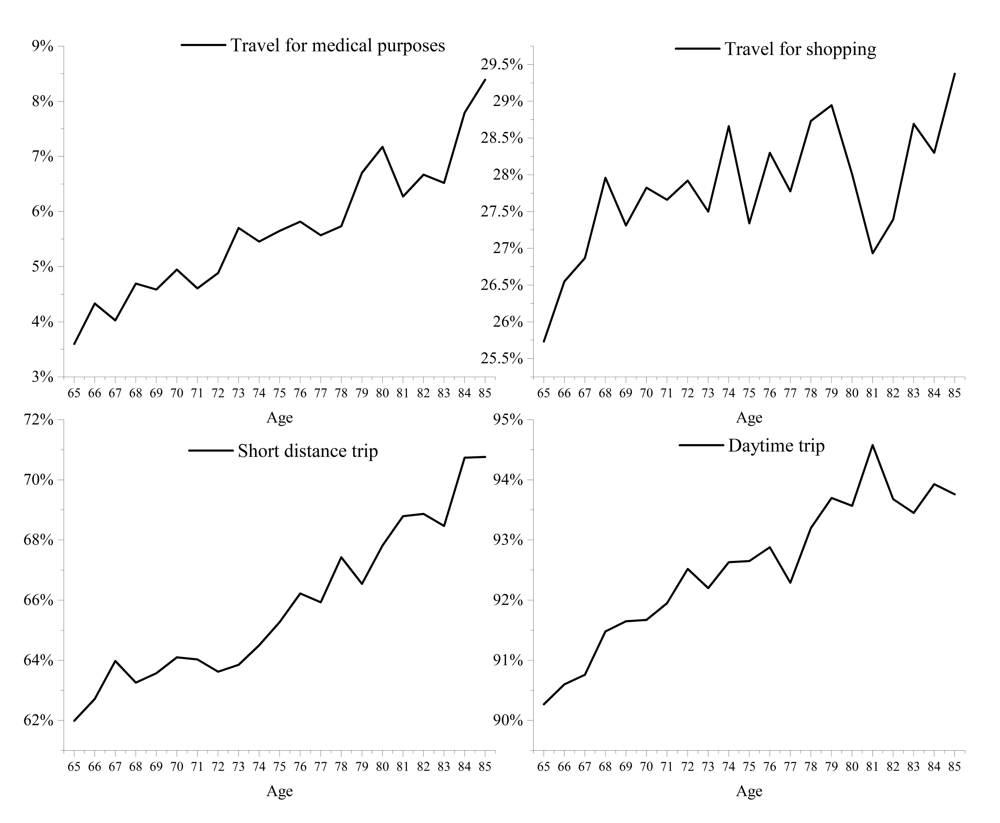
Background & directions
A little about me
I am a third-year Ph.D. student at Southeast University and the Shenzhen Loop Area Institute (SLAI). My advisor at Southeast University is Prof. Ziyuan Pu. At SLAI, I worked with Prof. Hongyang Li in my first year and am now supervised by Prof. Ping Luo.
I received my M.S. in Transportation from Hunan University in 2024, advised by Prof. Chenhui Liu. My earlier research on driving behavior and traffic safety informs my current work on autonomous systems.
Looking ahead
I am interested in 3D and 4D world-action models, reinforcement learning and post-training for safety, and adapting agent harnesses to physical tasks such as driving and manipulation.
Education
- Current
Southeast University
Ph.D. student · with SLAI
Autonomous driving & embodied AI
- 2024
Hunan University
M.S. in Transportation
Advisor: Prof. Chenhui Liu